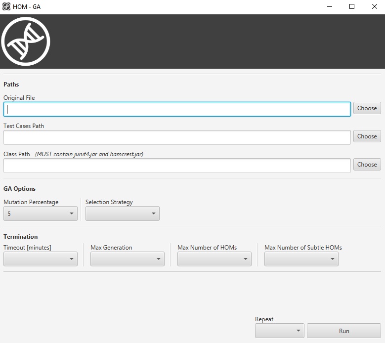
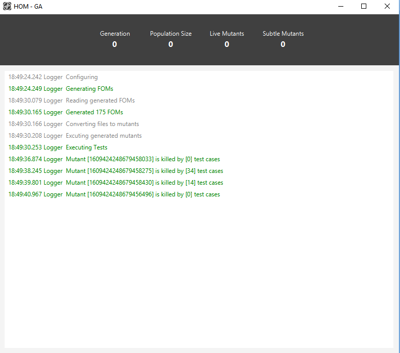

Caution
Closing the Monitor Screen will stop the algorithm and discard all the results.
GaSubtle requires Java SE Development Kit (JDK) version 8 in order to run and build, you can download it from here. You will also need Apache Maven in order to build the project, you can download it from here. After installing the JDK and Maven on your machine download the source code from GitHub. Then execute the following commands:
> cd /path/to/the/downloaded/project/folder > mvn clean installAfter that, you will find a folder named target under the project installation directory. Inside that folder you will find a jar file named GaSubtle-x.x.x-SNAPSHOT.jar. Run the generated jar file using:
> java -jar GaSubtle-x.x.x-SNAPSHOT.jarAfter running the tool you will see a splash screen. GaSubtle User Interface is built using JavaFX along with Spring Boot . So at this point, Spring Boot is configuring.
After the tool is done configuring, the main screen will show up.

Below table shows each field and what does it mean:
| Field Name | Mandatory | Description |
|---|---|---|
| Original File | yes | Path to the original .java file to be executed |
| Test Cases Path | yes | Path the directory that contains .class junit test cases |
| Class Path | yes | A directory to be added to classpath when executing test cases |
| Mutation Percentage | yes | The percentage of the total population that the algorithm will select using some selection strategy |
| Selection Strategy | yes | The selection strategy to be used |
| Termination | yes - at least one | The termination condtion for the algorithm |
| Repeat | yes | Determines how many times the algorithm should run in case of benchmarking |
After filling all the fields, press on run.
When the algorithm starts running, a Monitor Screen will show up.

After the tool is done running, it will store the results to the same path of the original file specified. The tool will export live and subtle mutants .java files along with an excel sheet report that contains details of each generation.
Closing the Monitor Screen will stop the algorithm and discard all the results.